Foodwise
— Guided cooking
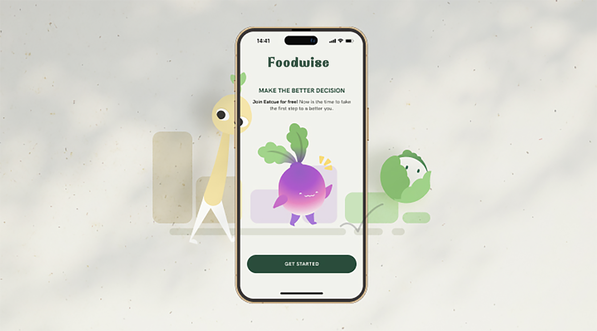
Summary —
Foodwise is a mobile app that helps college students eat healthier and save money through quick lessons, interactive quests, and rewards.
It uses fun design, mascots, and simple tips to build better food habits with minimal time and effort.
The Challenge
The college student population presents a unique challenge of transitioning from home to a relatively independent environment.
College students want to spend less money on eating out and instead prioritize health in their diets.
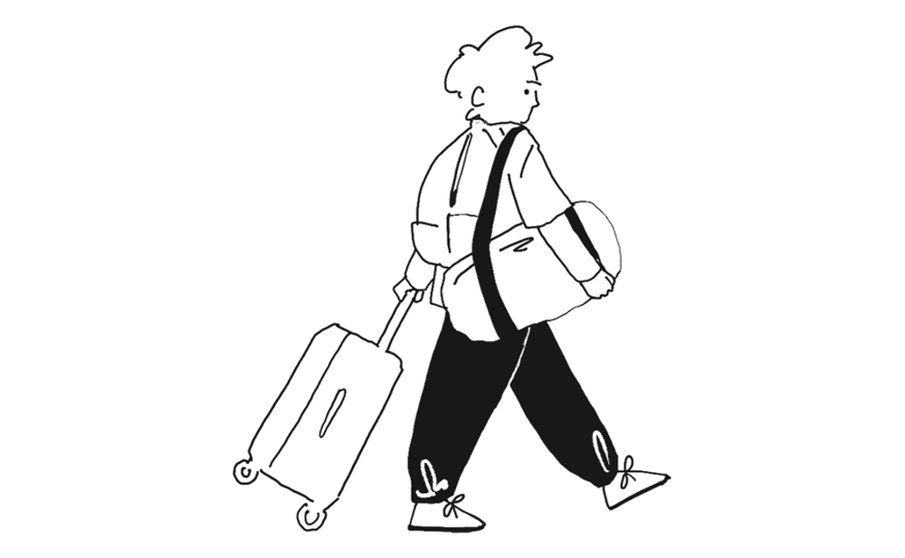
But it's difficult to achieve both without knowing how to make well-informed decisions, leading to unneccessary stress.
As healthy food is often less accessible, it added another layer of emotional stress when trying to choose between eating healthily and spending less.

The high-level goals that defined my design
1. Make good decisions easy and time-efficient
2. Make healthy habits actionable
— Skip the Design Process
Design Process —
Learning to make better decisions with Foodwise
I designed the main flow with first-time users in mind, introducing them to the key features while having it feel simple and manageable. Adhering closely to a set of product constraints helped me set a focused approach:
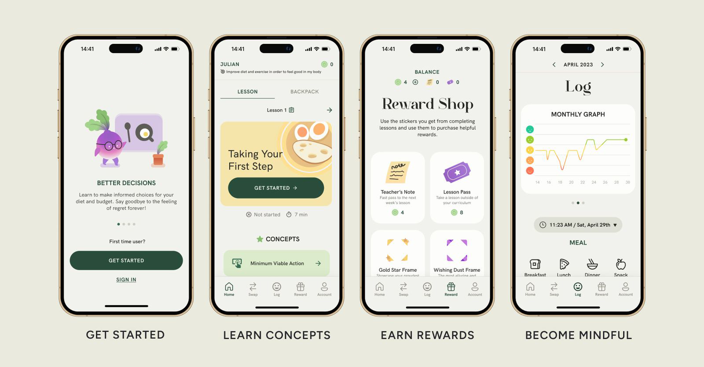
User Flow
The user journey map reflects the first-time user’s flow, onboarding them through a personalization process, having them take their first lesson, and completing their first quest.
Creating the brand:
A playful approach to health
Taking inspiration from the natural colors of vegetables such as cauliflower, spinach, and sweet potatoes, I created an experience that signaled wellness and health with a playful approach. The copy language is considerate and conversational.
Creating the brand:
A playful approach to health
Taking inspiration from the natural colors of vegetables such as cauliflower, spinach, and sweet potatoes, I created an experience that signaled wellness and health with a playful approach. The copy language is considerate and conversational.
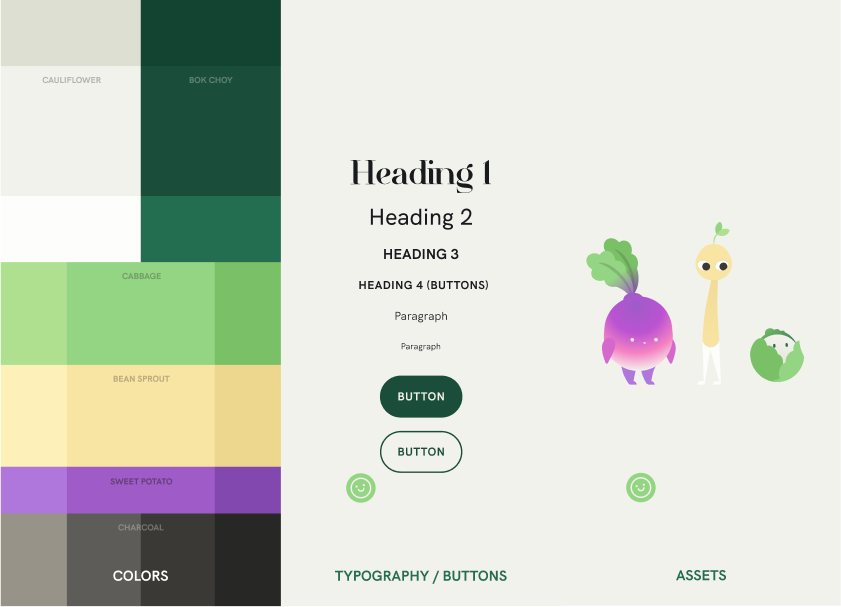
Which features should go on the nav bar?
In ensuring an intuitive user flow that felt intuitive and well-connected, I iterated on several approaches to the user flow, conducting user testing at each stage.
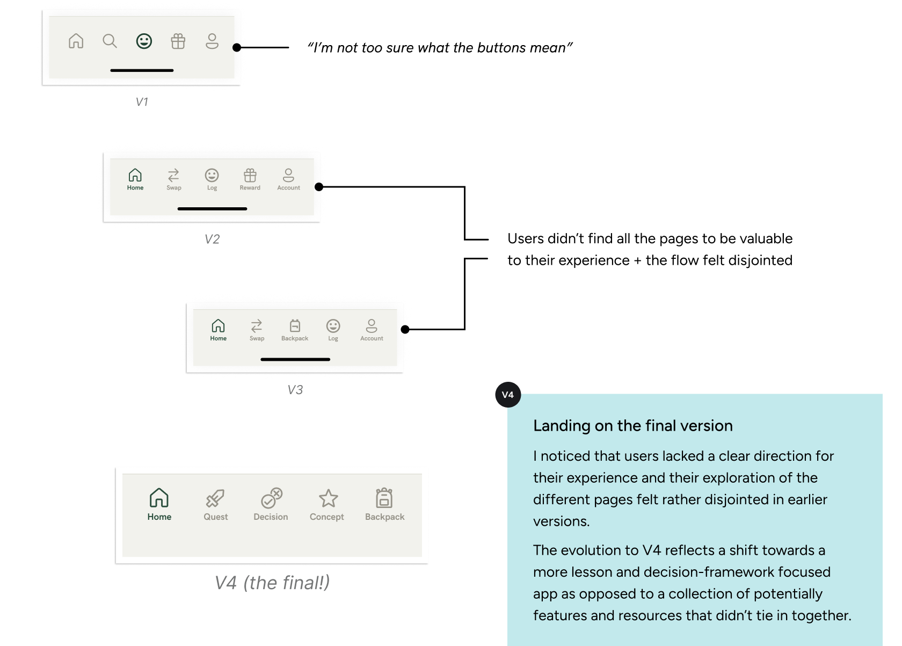
How can I create emphasis by differentiating the home screen?
The home screen dictates a large chunk of how the user will experience the app. I needed to find a way to differentiate it from the other pages while still adhering to the established themes and layouts.
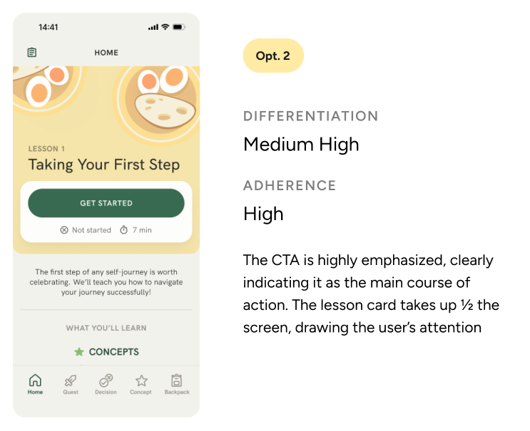
Design iterations
Once we had the technology, the user needs and the basic content, we created concepts for the interface design. We started creating sketches on paper to analyze them and turn them into digital low fidelity wireframes.
Research Process —
Understanding the problem
I conducted interviews and sent out a survey, sampling the viewpoints college students had towards healthy eating, how they made decisions about their food, and what goals they had for their eating and spending habits.
Affinity Mapping
I sorted the notes from the survey + interviews and categorized them to find commonalities.
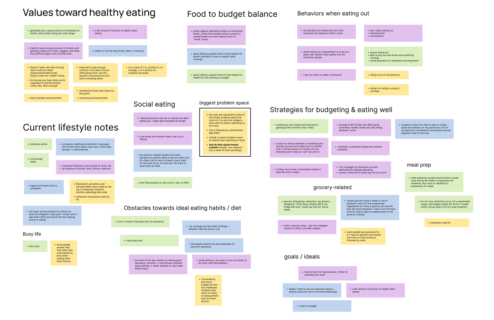
My research led me to a few emerging patterns that guided my direction:
Students defined healthy eating differently based on their goals and values: Some cared more about how it attributed to their mental well-being and some towards how it fueled their exercise. As such, everyone reported a different strategy they employed towards healthy eating.
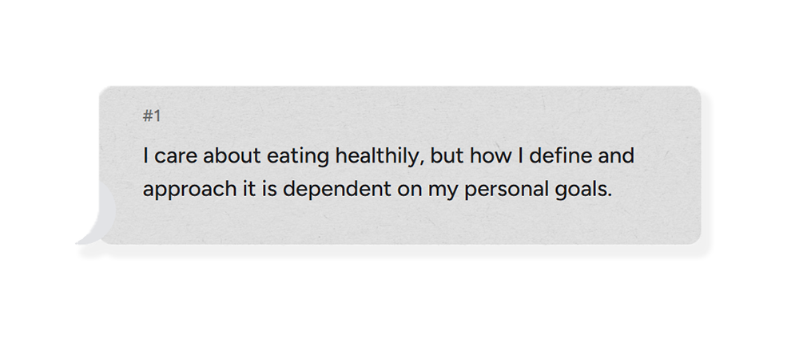
Although students enjoy eating out, they occasionally feel social pressure to do so. As such, survey results showed their overwhelming desire to reduce the amount they spend on eating out.
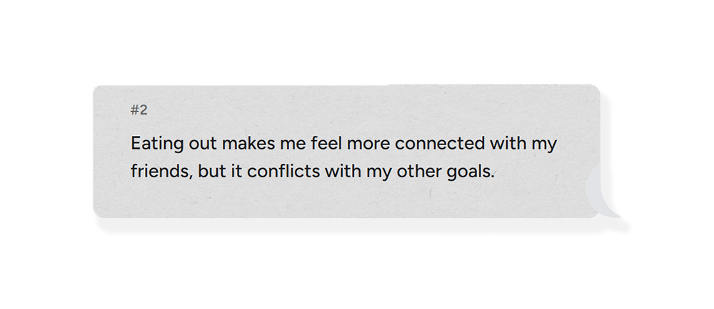
Inefficiency is standing in the way of making better food decisions, and good habits are taking too much effort to execute on.
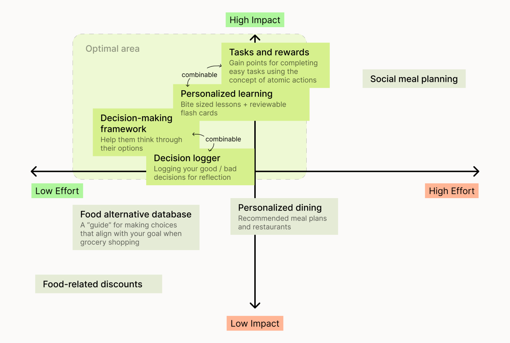Final concept validation
At the end of the iteration process I tested the prototype with some target users to develop a functional and good-looking solution for the overall visual interface.
Visual Interface —
Learning to make better decisions with Foodwise
The projection technology defined some key aspects for the final visual interface, for example most projectors take black as absence of light, so we used it as the background color to create a floating effect. Interface colors, photos and videos were tested several times with different surfaces and light scenarios.

Final Result —
Cooking assistant
The final concept can be divided into oChef's three main features: profile creation, mobile app connection and cooking process.
Personalized experience
Personalized learning generates a lesson plan that can best help users achieve their definition of healthier eating, which was shown to differ across individuals during research.
— Bright light environment
Low-commitment learning
68.8% of students surveyed reported time as an influential constraint for their food choices. By engaging with short lessons wherever and whenever, they can learn to make better decisions with as little sacrifice as possible.
— Bright light environment
Rewarded behavior
The simple and intuitive interface guides the user throughout the step-by-step process. The interface shows the process progress and the user can either continue to the next step or go back to the previous one.
— Bright light environment
By reinforcing every new concept with actionable quests to help users take the first step...
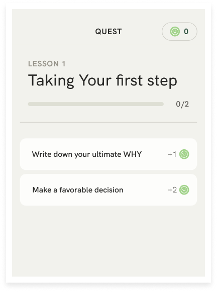
...and implementing a decision framework for them to fall back on...
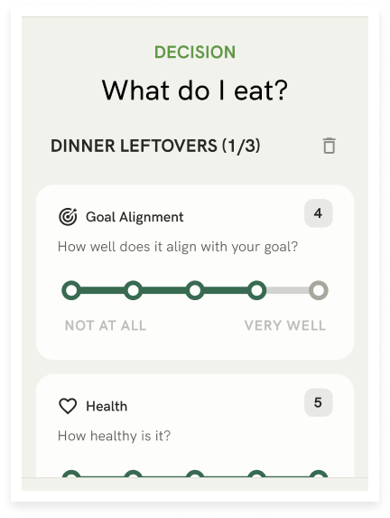
Conclusion —
Learnings and future plans
ABOUT THE TIMELINE
It’s been a year since the initial kickoff of this project in January 2025. Within a 2 month time frame, I went through the end-to-end process of designing a product and published the first instance of Foodwise's case study. After getting valuable feedback from an interviewer and several designers, I decided to revisit the project June 2025, challenging my prior decisions. This included
Special shoutout to Adeeb Hawa for helping me thorughout this process
WHAT'S NEXT?
Foodwise has developed alongside my growth as a UX researcher, but there is still more to be desired.
For example, I’d love to explore...
Moving forward, I'm most curious to see how my new project Chefitup; meal prep app for diabetic health.
— 2025